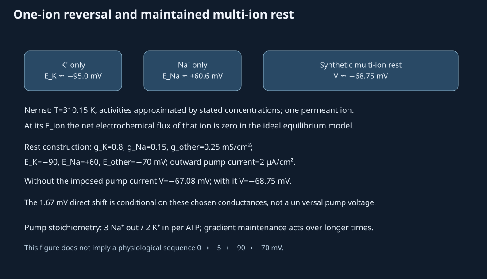
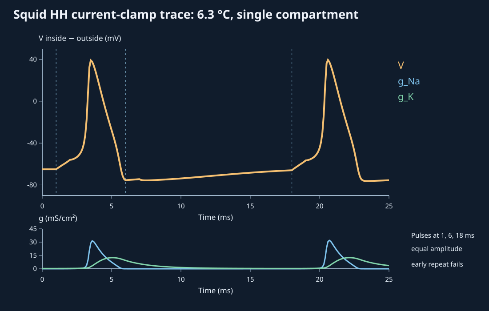
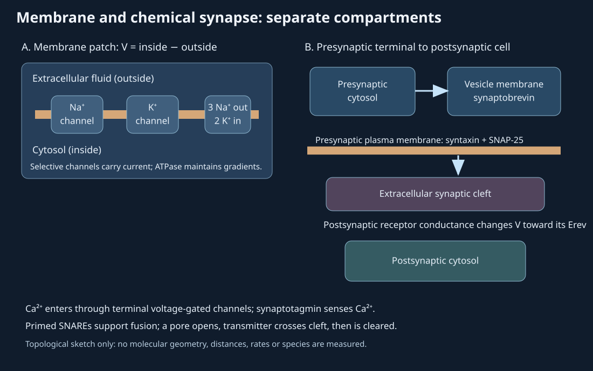
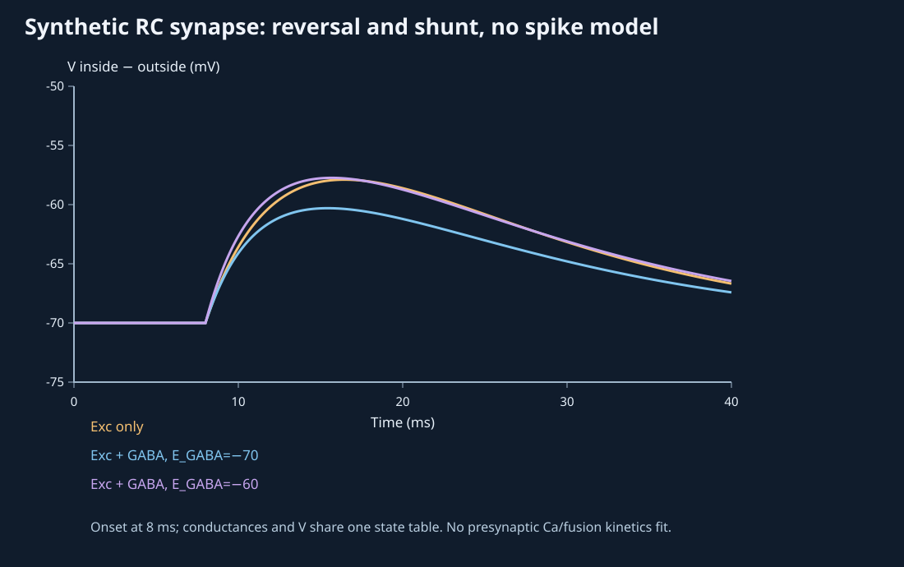

24. Membrane excitability and synaptic transmission
A membrane voltage is reported as −70 mV. Is that the potassium equilibrium voltage, a pump-generated voltage, the voltage after a GABA response, or a threshold? The number alone cannot answer. Each statement refers to a different comparison: a single permeant ion, a maintained multi-ion state, a receptor conductance, or the availability of regenerative channels. The sign of every current must refer to the same inside and outside.
Our persistent object is one membrane patch separating cytosol from extracellular fluid. Define membrane voltage V as electric potential inside minus electric potential outside, in millivolts. Thus a negative V means the interior is relatively negative. Positive ionic and pump current means outward movement of positive charge, so it tends to lower V. This ionic-current convention will be used in the illustrative resting balance, the squid giant-axon action-potential model, and the separate synthetic postsynaptic RC model; applied injected current has its own stated sign. The last three are different preparations or teaching constructions; their numerical traces must not be treated as one human cell record.
Lecture spine: official L56–57, all 29 assigned topics including the pump-stop and channel-perturbation closing activities. Complete publisher captions and a bounded source audit of 8 contact sheets, 133 sampled stills and 15 selected native reopens informed this draft; the stills are partial visual evidence, not continuous video/audio. The lecture's fixed 0→−5→−90→−70 sequence, universal EPSP/IPSP voltages, Na gate wording and Ca-to-SNARE “bridge” are corrected beside the mechanisms. An L57 slide visibly corrects an IPSP-for-EPSP label. Original controlled plots are model output, not recordings.
24.1 Rest is a maintained state, not four voltage stages L56 03:06
At rest, lipid membrane and ion-selective pathways separate concentrations. A conductance measures ease of charge flow through a pathway; it depends on channel state, number, single-channel properties and driving force context. A reversal potential is the voltage at which the pathway's net current changes sign under specified ion conditions. A permeant ion can be moving microscopically in both directions while its net flux is zero at equilibrium. Rest in a living neuron usually involves multiple currents and ATP-dependent transport, so it is not the equilibrium of every ion at once.
The Na⁺/K⁺ ATPase exchanges three Na⁺ out for two K⁺ in per hydrolyzed ATP under its usual cycle. Moving one net positive charge outward per cycle makes it electrogenic. More consequentially over time, it sustains Na and K concentration gradients that channels dissipate. A single pump cycle is not a fixed −5 mV voltage step. The direct voltage contribution of an outward pump current depends on the total open conductance and membrane capacitance; stopping the pump changes that current immediately, while the gradients subsequently change over time if channels continue carrying ions. Water balance depends on total effective osmotic content and permeability, not on the claim that Na alone always bursts a cell.
Consider a deliberately synthetic steady patch with K, Na and an “other” conductance. Let gi be in mS/cm² and Ei in mV; their product is current density in µA/cm². Let Ipump be an outward-positive pump current density. Zero capacitive current gives
This follows by expanding the sum and collecting V. It is a conductance balance under fixed gradients, not a chronology of a membrane charging from zero. For the chosen values gK=0.8, gNa=0.15, gother=0.25 mS/cm²; EK=−90, ENa=+60, Eother=−70 mV, the no-pump balance is −67.083 mV. An imposed outward current of 2 µA/cm² shifts it to −68.75 mV, a direct −1.667 mV under these conductances. This current is an arbitrary teaching input, not a calibrated ATPase current or a measured human resting potential.

24.2 A single-ion balance gives a Nernst potential L56 14:27
For one ion with signed valence z, let ain and aout be positive activities on the two sides. The electrochemical potential per mole combines a chemical term RT ln a and an electrical term zFφ. Here R is the gas constant (J mol⁻¹ K⁻¹), T absolute kelvin, F Faraday's constant (C mol⁻¹), and φ electric potential. Equality across the membrane for that ion gives
The ratio is dimensionless; positive activities and nonzero valence are required. The logarithm's sign and z both matter. With z=+1 and an illustrative 310.15 K, K activities approximated by 140 inside and 4 outside give EK≈−95.02 mV. Na approximated by 15 inside and 145 outside gives ENa≈+60.63 mV. Those values come from a specific idealized concentration table, not a universal resting neuron. For Cl⁻, z=−1 reverses the sign relationship; one cannot infer Cl flux solely from “negative ion outside.” Activity coefficients, local concentrations, transporters and multi-ion permeability limit the concentration approximation. The EPFL equilibrium-potential derivation gives the one-ion context.
At V=EK, K has no net electrochemical flux in the single-ion equilibrium model. A living patch may at that voltage still have Na, Cl and pump currents. Conversely, a resting patch can have a constant V while individual ion currents continue and balance. This distinction dissolves the source's suggestion that −90 mV is an obligatory second stage on the way to −70 mV. The explicit calculation in the chapter code rejects zero or negative activities and nonfinite inputs, then converts volts to millivolts.
24.3 Graded inputs combine through conductance and location L56 18:01
A graded potential varies with input strength, site and time. Passive voltage spread attenuates along a membrane and dendritic tree because current can leak and charge capacitance. A local postsynaptic response is therefore unlike an axonal action potential regenerated at successive excitable regions. Ligand-gated ion channels are one important route; mechanically gated sensory channels and metabotropic pathways are others. A transmitter molecule is not itself the channel, and receptor binding on the postsynaptic membrane follows a presynaptic release event.
Call an input excitatory when it increases the probability of triggering an action potential in the stated cell/state, and inhibitory when it decreases that probability. The labels are functional, not fixed voltages such as “EPSP ends at −55 mV” or “IPSP ends at −90 mV.” An ionotropic glutamate receptor with a mixed-cation reversal near 0 mV often depolarizes a resting neuron, but its current and resulting voltage depend on permeability and driving force. GABAA is chiefly an anion conductance, with Cl⁻ and often HCO₃⁻ contributions; GABAB uses G-protein signaling, including K-channel pathways. The sign and effect of GABAA depend on its reversal potential relative to the current membrane voltage and spike threshold. It can hyperpolarize, shunt an excitatory response near rest, or depolarize without necessarily being excitatory. The primary mouse hippocampal anion-selectivity experiment illustrates how altered intracellular anion conditions shift response polarity; the owning abstract/index was accessible here, not its full methods.
For an intentionally lumped one-compartment RC example, let C=1 µF/cm², leak gL=0.1 mS/cm² with EL=−70 mV, excitatory EE=0 mV, and imposed decaying conductances gE and gG that start at 8 model ms. Charge balance is
The capacitance integrates the sum of currents, not a fixed number of millivolts per synapse. At a given state, a conductance draws V toward its own reversal. With the excitatory conductance alone, this synthetic cell peaks near −57.891 mV. Adding a conductance with EG=−70 mV hardly changes its resting voltage but reduces the excitatory peak to about −60.302 mV by shunting. If the imposed GABA-like reversal is −60 mV, the combined trace peaks near −57.738 mV. This last trace is depolarized relative to rest, but the model has no spike trigger; it cannot itself classify a real synapse's net effect on firing. Its values are not measured GABAA reversal potentials in a named human neuron.
Temporal summation occurs when a later input arrives before an earlier voltage/conductance response has decayed. Spatial summation combines inputs at different sites, weighted by dendritic filtering and the state of conductances near the axon initial segment. A sum of identical +15 mV jumps is generally wrong: input current changes as V approaches reversal, and an inhibitory shunt can reduce transfer without a large negative voltage excursion. The closing L56 pump-stop question has the two timescales established in §24.1; the brief lecture aside on plasticity does not supply a quantified practice-to-memory law.
24.4 Na activation, Na inactivation and delayed K produce a spike L57 01:45
An action potential is a regenerative membrane-voltage event in excitable membrane. A sufficiently effective depolarization increases fast Na conductance; inward Na current can further depolarize the membrane, recruiting still more Na activation. Na availability then falls through inactivation while slower K activation adds outward current, bringing voltage down. Persistent K conductance can cause an afterhyperpolarization, but −90 mV is not an obligatory endpoint. The lecture's −55 mV threshold and +30 mV peak are illustrative labels, not switches at which all channels instantaneously open or close. The L57 03:00 source slide visibly flags its own EPSP/IPSP label reversal; excitatory graded input is an EPSP, whereas an IPSP is not a stronger excitatory pulse.
To make the channel-state timing testable, we use the classic Hodgkin–Huxley 1952 squid giant-axon equations in modern inside-minus-outside voltage form. This is a single membrane compartment at the original 6.3 °C reference temperature, not a human axon fit or a spatial cable. m is a dimensionless fast Na activation variable; h is Na availability (lost during inactivation); n is delayed K activation. Each is a population gating variable between 0 and 1, not an observed gate angle. With capacitance density C=1 µF/cm², maximal Na/K/leak conductances 120/36/0.3 mS/cm² and reversal voltages +50/−77/−54.387 mV, the equations are
Define \(I_{\mathrm{inj}}\) as applied inward-positive current density: positive injection adds positive charge to the interior. Na, K and leak currents remain outward-positive, so their sum is subtracted from the applied current in the capacitive balance.
The first equation is capacitive charge balance in µA/cm²; the second states that a gate population moves between available and unavailable states with voltage-dependent rates in ms⁻¹. The empirical rate functions and their removable singularities at selected voltages are implemented in the code. At rest, activation is mostly closed, Na availability is permissive but not numerically 1, and K activation is partial. During depolarization, m rises rapidly, h falls, and n rises more slowly. Repolarization lets h recover. The lecture's statement that an inactivation gate “opens slowly after activation” reverses this availability logic.
The figure uses three equal current-density pulses, 10 µA/cm² for one ms each, beginning at model times 1, 6 and 18 ms. The first and later pulses produce spikes in this parameter set; the early repeat does not. The computed peak is about +39.46 mV and the trough about −76.17 mV. These values arise from the squid model, not from the source's universal −55/+30/−90 ladder. A fourth-order Runge–Kutta step of 0.0025 ms produces a 0.1 ms export table; halving that step changed sampled voltage by at most about 0.062 mV in a separate mesh check. Neither numerical agreement nor a pedagogical plot verifies patient axon physiology.

24.5 Refractoriness and local propagation are state-dependent L57 28:40
After a spike, many Na channels are inactivated and cannot immediately support another regenerative upstroke. An absolute refractory period is the state interval in which a second normal propagated spike cannot be initiated, even with an effective stimulus, because sufficient Na availability is absent. During relative refractoriness, some availability returns but the threshold or required stimulus can remain elevated, often with persistent K conductance and afterhyperpolarization. The boundaries depend on preparation and state, not on a fixed fraction of a textbook waveform. Our equal early pulse fails, but failure at one strength alone does not prove a mathematically absolute period; a family of strengths and a propagation criterion would be required. An IPSP ordinarily makes excitation less likely; the source's “extra IPSP” as a way to overcome refractoriness is a sign error.
A traveling action potential is spatially organized. In one patch, inward current during the upstroke can send axial current into an adjacent less-depolarized region; that region's voltage-gated channels regenerate its own spike. Behind the front, Na availability is reduced and K current promotes recovery. This local current/regeneration sequence supports forward propagation and the usual refractory bias against immediate backward re-excitation. Myelinated axons add internodal current spread and nodal regeneration, as introduced in Chapter 23. The present HH trace is a point model; the visual's shifted patches are explicitly schematic, so no distance or propagation speed follows from their lag. Chemical transfer across a synapse is a separate terminal-to-postsynaptic event.
24.6 Terminal Ca entry, fusion and receptor current are separate steps L57 09:25
When a presynaptic action potential reaches a chemical-synapse terminal, depolarization can open voltage-gated Ca²⁺ channels. Under the usual gradient, Ca²⁺ moves from extracellular fluid into the terminal cytosol. Vesicles may already be docked or primed near the presynaptic plasma membrane. The vesicle protein synaptobrevin is a v-SNARE; syntaxin and SNAP-25 are plasma-membrane SNARE partners. Their assembled machinery helps bring the bilayers into fusion. Synaptotagmin acts as a Ca²⁺ sensor in many fast synapses; Ca binding helps trigger the primed system, followed by a fusion pore and transmitter release into the extracellular cleft. The source's diagram that Ca itself physically bridges two SNAREs is too literal. A primary synaptotagmin/SNARE membrane-fusion study was accessed as full-text XML through Europe PMC, with its relevant fusion sections read for this molecular distinction; it is a reconstituted/experimental mechanism, not a direct movie of every human synapse.
Released transmitter binds a receptor on the postsynaptic membrane. Ionotropic receptors can change conductance rapidly; metabotropic receptors work through intracellular signaling. The resulting current depends on V−E and can produce a graded potential rather than a guaranteed action potential. Transmitter clearance by transporters, enzymes, diffusion or glia depends on the molecule and tissue; it does not occur automatically at the instant of fusion. The observed membrane compartments in the source cartoons are useful, but their drawn distances and moving particles are not licensed or measured microstructure.



The L57 closing activity asks how a channel perturbation changes propagation and transmission. A specified block of axonal voltage-gated Na channels can prevent a propagated spike from reaching a terminal; then depolarization-dependent Ca entry and release may fall. A specified terminal Ca-channel block can impair release despite an arriving axonal spike. A postsynaptic receptor change can alter graded current even if both upstream steps occur. These are causal comparison cases, not a drug dose, disease diagnosis or individual outcome. Some muscle and endocrine cells also generate action potentials; their conductances and waveforms need not match the squid axon or this neuron sketch.
24.7 Six worked investigations
24.1 Sign of a single-ion equilibrium
At 310.15 K, use the ideal Nernst formula with monovalent K activities approximated by 140 inside and 4 outside. Predict the sign before computing; then explain what a constant −70 mV resting voltage does not imply about K flux.
Worked solution
For K, signed valence is +1 and outside/inside is 4/140, less than one, so its natural logarithm is negative. Multiplying by positive RT/F gives approximately −95.02 mV. A patch at −70 mV is above that K reversal in this example; an open K pathway has an outward-positive driving current under the sign convention, while other pathways and a pump may balance it. Constant voltage is zero net capacitive current, not zero K current or universal single-ion equilibrium.
24.2 A pump-stop counterexample
In the synthetic rest balance, the total conductance is 1.2 mS/cm² and an outward pump current is 2 µA/cm². Compute the instantaneous equilibrium shift when that direct current is removed while concentrations and conductances are held fixed. Why does this not determine the later membrane trajectory?
Worked solution
The direct steady shift due to the pump term is −2/1.2≈−1.667 mV. The chosen with-pump balance is −68.75 mV and the no-pump balance is −67.083 mV, a 1.667 mV depolarizing difference when the pump current is removed. The membrane capacitance prevents an instantaneous voltage jump to a new equilibrium; and over longer time, ongoing leak changes Na/K gradients and hence reversal voltages. Without pathway kinetics, volumes and transport details there is no unique later voltage. A fixed −5 mV subtraction or instantaneous 0 mV is unjustified.
24.3 A shunt without a negative deflection
The synthetic RC cell rests at −70 mV. Compare excitation alone with the same excitation plus a conductance whose reversal is −70 mV. Why can the added conductance reduce the EPSP without hyperpolarizing the resting cell? Give the printed peak values.
Worked solution
At rest the added pathway has zero driving force because V equals its −70 mV reversal, so it need not make a visible negative voltage deflection. During excitation, V moves above −70 mV; the new conductance then supplies outward-positive current and reduces the voltage excursion. In this specified model the excitation-alone peak is about −57.891 mV; with the shunt it is about −60.302 mV. The effect depends on conductance and state, not on forcing an IPSP to end at −90 mV.
24.4 Gate identity and a repeated pulse
For the squid HH trace, name m, h and n and explain why equal pulses at 1 and 6 ms need not evoke equal responses. Does the failure of one 6 ms pulse prove absolute refractoriness?
Worked solution
m is fast Na activation, h is Na availability that falls with inactivation, and n is delayed K activation. After the first spike, reduced h limits regenerative inward Na current while elevated K conductance opposes depolarization. The equal 6 ms pulse therefore fails to produce another spike in this model; the equal 18 ms pulse succeeds after more recovery. One failed stimulus strength does not establish the absolute-refractory boundary. That classification would require a specified stronger-stimulus family and a criterion for a normal propagated spike, not merely a single-compartment voltage bump.
24.5 One membrane patch is not a conduction velocity
The controlled figure shows three neighboring patches from the same HH voltage trace, offset by arbitrary 1.2 ms lags. Can the display establish a physical conduction speed? Trace the local-current and channel-state argument for forward propagation and name an omitted ingredient.
Worked solution
No. A velocity requires a distance and a spatial cable or measured propagation time; neither is supplied by shifted copies of a point-model trace. The upstroke in one membrane region drives local axial current into an adjacent resting region, where voltage-dependent Na channels can regenerate a spike. The region behind has reduced Na availability and elevated K conductance, biasing it against immediate re-excitation. Axial resistance, geometry, membrane capacitance per length, myelin and channel distribution are omitted from this schematic spatial display.
24.6 Locate a failure along the synaptic chain
Compare three hypothetical perturbations: an axonal Na-channel block, a presynaptic Ca-channel block, and a postsynaptic ligand-gated receptor block. Which stages can still occur in each case? Identify the roles of synaptotagmin and SNARE proteins without calling Ca²⁺ a physical bridge.
Worked solution
With an effective axonal Na-channel block upstream, the spike may fail to reach the terminal, reducing terminal depolarization, Ca entry and vesicle release. With a terminal Ca-channel block, the axonal spike may arrive but Ca-dependent triggering and release can fail. With a postsynaptic receptor block, spike arrival, Ca entry and presynaptic fusion may still occur, while the postsynaptic current is reduced or absent. Synaptotagmin senses Ca²⁺ in many fast synapses; vesicle synaptobrevin and plasma-membrane syntaxin/SNAP-25 form part of the fusion machinery. The examples specify causal locations only and do not prescribe a drug or predict a patient's response.
24.8 Reproduce and test the teaching models
Run python code/ch24_membrane.py. It exports the shared state table and checks Nernst signs, invalid domains, the exact direct pump shift, HH gate bounds and spike pattern, and RC shunting. The steady-balance calculator requires finite inputs and representable total conductance, conductance-by-reversal products, numerator and output; it rejects unrepresentable intermediate arithmetic rather than reporting a spurious finite voltage. python code/ch24_visuals.py rebuilds the original static figures from that state table. The HH integrator uses fourth-order Runge–Kutta with a 0.0025 ms step; its 0.1 ms export sampling is coarser than its internal numerical step. The rest and synapse examples use their own declared parameters. Change one reversal or conductance at a time and re-evaluate the sign of g(V−E); a graph alone does not reveal its experimental preparation.
Seek the rest panel's single-ion and multi-ion positions and state why their numbers are not successive time samples. Seek the AP panel at the Na upstroke, the early failed repeat and the late spike; compare m, h and n in the readout and the conductance curves. Seek the synapse panel before and after its imposed 8 ms receptor onset, then compare the three reversal cases. Changing playback speed never changes model time or equations. All static print views retain the axes, units and evidence limits.
24.9 Sources and evidence limits
The complete official L56–57 publisher captions and both closing activities form the topic spine. Sampled slides and native reopens are bounded still observations; the source drawings are not reused. The original 1952 Hodgkin–Huxley paper was directly read in its full PDF for the squid preparation, 6.3 °C rate reference, ionic-current/gate separation, propagated versus point-model distinction, and refractory calculations. The EPFL Nernst derivation and EPFL synaptic-conductance chapter were read at their owning pages. A primary synaptotagmin/SNARE study was accessed as full-text Europe PMC XML, with relevant fusion sections read, after the direct PMC page was challenged. The GABA anion-selectivity study was accessible as owning indexed abstract text only, not full methods.
The source-based Figure 24.3 is an original nonmetric topology at separate explanatory scales, not a tissue micrograph or molecular structure rendering. Structural photography would not show voltage, channel opening or a millisecond release sequence; the useful evidence here is signed equations and controlled quantitative states. The 1952 squid membrane parameters, the human-temperature illustrative Nernst concentrations, the artificial resting conductance/pump example and the synthetic RC synapse are deliberately distinct. No plot is an observed human time series, a fitted disease model, a channel-drug dosing guide or a patient-level prediction.